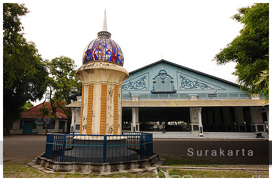

Paket Wisata Dieng dari Solo – Private Trip, Fleksibel & Penuh Cerita
Waktunya ganti suasana! Paket wisata Dieng dari Solo hadir untuk kamu yang ingin menikmati udara pegunungan, spot-spot istimewa, dan cerita baru tanpa repot urusan teknis. Semua penjemputan dilakukan langsung dari kota Solo atau area sekitarnya—bisa dari rumah, hotel, stasiun, atau meeting point yang kamu pilih sendiri. Sepanjang perjalanan, kamu tinggal duduk nyaman, semua kebutuhan perjalanan sudah diatur oleh tim profesional yang sudah berpengalaman melayani private trip Solo–Dieng.
Ada tiga pilihan durasi yang bisa kamu sesuaikan dengan agenda liburanmu: satu hari tanpa menginap untuk itinerary super padat, dua hari satu malam untuk sensasi menikmati sunrise dan malam sejuk Dieng, atau tiga hari dua malam biar agenda eksplorasi lebih leluasa dan santai. Semua program didampingi tour leader lokal yang ramah dan siap bantu atur semua request selama trip. Cocok untuk solo traveler, pasangan, keluarga, atau sahabat yang ingin liburan tanpa campur dengan peserta lain.
Seluruh fasilitas sudah all-in: transportasi privat, penginapan bersih, makan terjamin setiap hari, tiket masuk wisata, serta air mineral untuk setiap peserta. Kamu juga bisa request custom itinerary—pilih sendiri destinasi utama, rute perjalanan, bahkan waktu berangkat dan pulang. Tidak ada aturan kaku, semua bisa diatur sesuai kebutuhan dan gaya liburanmu.
Selain itu, tim kami siap membantu dokumentasi foto, saran kuliner, sampai rekomendasi hidden spot yang jarang dikunjungi wisatawan. Semua komunikasi mudah, cukup hubungi tim reservasi dan semua detail trip langsung dikonfirmasi satu pintu. Fleksibilitas adalah prioritas kami, jadi kamu tidak perlu khawatir soal perubahan agenda atau tambahan aktivitas selama trip berlangsung.
Pilihan Paket & Waktu
- Paket 1 Hari: Berangkat pagi, langsung menuju spot utama, eksplor seharian, dan kembali ke Solo di malam hari. Efisien untuk agenda padat.
- Paket 2 Hari 1 Malam: Nikmati pengalaman menginap di Dieng, rasakan sunrise, suasana malam pegunungan, dan waktu lebih longgar untuk jelajah wisata favorit.
- Paket 3 Hari 2 Malam: Liburan tanpa terburu-buru, itinerary luas, waktu cukup untuk menjajal semua spot unggulan dan agenda santai di sela-sela perjalanan.
Fasilitas
- Transportasi privat Solo–Dieng (mobil/vip car, full AC, driver profesional)
- Penjemputan dan pengantaran area Solo (bisa rumah, hotel, stasiun, bandara, atau lokasi lain yang di-request)
- Tour leader lokal Dieng, ramah dan paham wisata serta kuliner khas
- Penginapan privat (homestay/hotel Dieng, bisa pilih kamar sesuai kebutuhan)
- Layanan makan lengkap (pagi, siang, malam, dan snack/cemilan lokal)
- Tiket masuk seluruh destinasi wisata sesuai itinerary
- Air mineral untuk semua peserta setiap hari
- Parkir, tol, dan retribusi wisata sudah termasuk
- Dokumentasi foto basic di destinasi tertentu
Destinasi Favorit Dieng
- Bukit Sikunir: Spot sunrise andalan, pemandangan awan tipis dan pegunungan yang fotogenik.
- Telaga Cebong: Danau alami dengan suasana pagi yang sejuk, cocok untuk foto atau sekadar relaksasi.
- Kawah Sikidang: Kawah aktif dengan fenomena uap panas, mudah diakses dan edukatif.
- Komplek Candi Arjuna: Area candi Hindu kuno di tengah dataran tinggi, nuansa heritage dan tenang.
- Batu Ratapan Angin: Bukit dengan view dua telaga dan hamparan perbukitan, wajib untuk hunting foto.
- Dieng Plateau Theater: Bioskop mini yang menayangkan kisah Dieng lewat dokumenter singkat.
- Taman Pintu Langit: Taman kekinian dengan banyak spot instagramable dan area duduk santai.
- Pemandian Air Panas: Tempat relaksasi berendam air hangat alami di pegunungan Dieng.
- Kahyangan Skyline: Gardu pandang tinggi dengan view cityscape dan dataran tinggi.
- Dieng Park: Family park dan taman outdoor untuk santai bersama keluarga atau teman.
- Air Terjun Sikarim: Air terjun alami, sejuk, dan jauh dari keramaian wisata mainstream.
- Telaga Menjer: Danau luas di kaki gunung, cocok untuk piknik dan foto panorama alam.
- Bukit Scooter: Tempat paling asik untuk sore hari atau sunset, view kota dan langit terbuka.
- Perkebunan Teh: Jalan-jalan santai di kebun teh, nuansa hijau, udara segar, dan suasana menenangkan.
- Sentra Oleh-oleh & Kuliner: Tempat belanja buah tangan dan icip-icip makanan khas Wonosobo & Dieng.
Semua destinasi bisa kamu pilih sendiri, itinerary bebas dikustom, bahkan bisa tambah aktivitas atau spot sesuai keinginan. Tidak ada agenda baku, semua trip dibuat sesuai preferensi peserta.
Panduan Perjalanan dari Solo
Solo ke Dieng ditempuh sekitar 5-6 jam lewat jalur utama Jawa Tengah. Sepanjang perjalanan, kamu bisa menikmati suasana khas pedesaan, persawahan, dan pegunungan. Waktu keberangkatan dan penjemputan fleksibel, itinerary bisa diatur sebelum keberangkatan atau on the go bersama tour leader. Seluruh transportasi nyaman, makan dan penginapan dipilih yang terbaik di kelasnya, cocok untuk segala usia.
Jangan lupa bawa jaket tebal, pakaian hangat, dan sepatu nyaman karena suhu Dieng cenderung dingin, terutama malam dan pagi hari. Jika ingin request menu makanan tertentu, sesi foto privat, atau tambahan hari, langsung komunikasikan saja—semua bisa diatur agar perjalanan benar-benar sesuai harapan.
FAQ Paket Dieng dari Solo
Bisa dijemput dari area manapun di Solo?
Bisa, penjemputan fleksibel dari rumah, hotel, stasiun, bandara, atau lokasi yang kamu tentukan sendiri di Solo dan sekitarnya.
Apakah itinerary bisa request penuh?
Bisa, semua destinasi dan aktivitas bisa diatur ulang sesuai minat atau request khusus dari peserta.
Paket bisa untuk berapa orang?
Paket tersedia untuk dua orang, keluarga, sahabat, atau grup kecil dengan transportasi dan fasilitas privat.
Termasuk semua tiket wisata dan makan?
Sudah, semua tiket destinasi, makan lengkap, air mineral, dan dokumentasi foto sudah termasuk paket.
Bisa tambah hari atau upgrade hotel?
Bisa, konsultasi dulu dengan tim reservasi untuk menyesuaikan budget, fasilitas, dan agenda liburanmu.